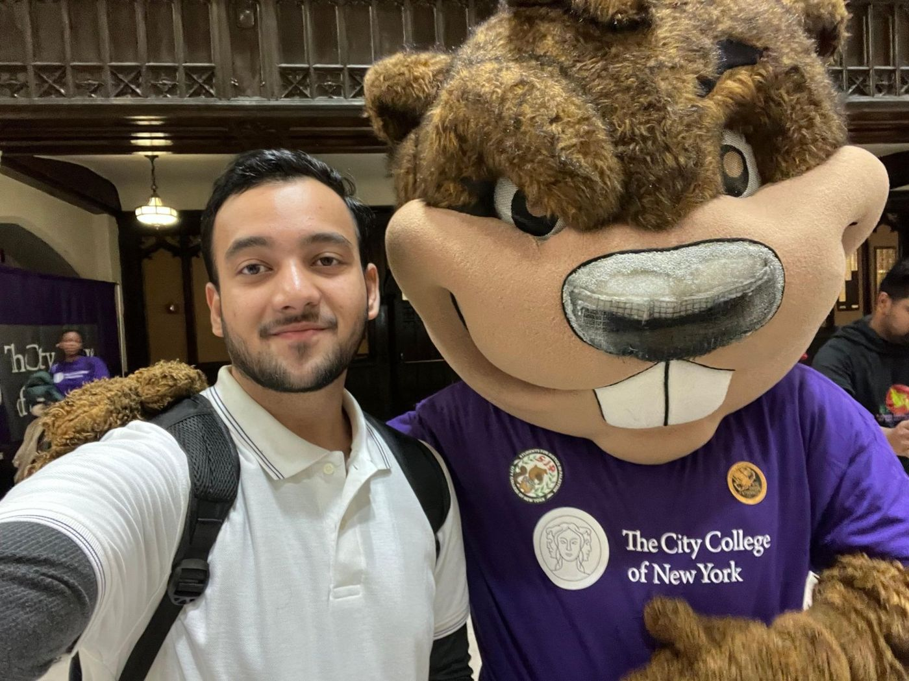
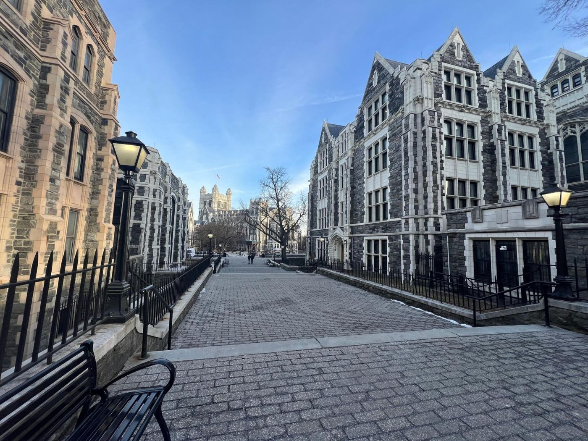
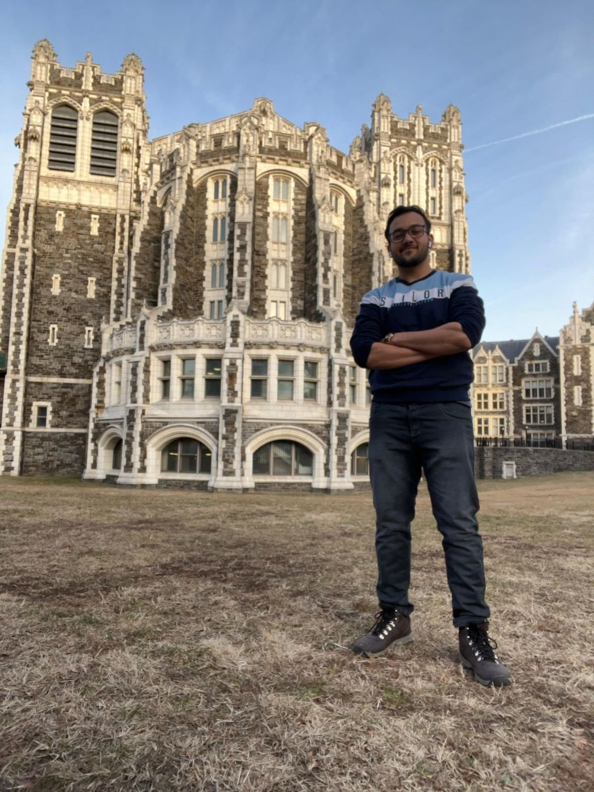

Master of Science in Cybersecurity
Jan 2025 – Dec 2026 (Expected) | Current CGPA: 3.6
City College of New York, New York, NY
Graduate coursework spanning network security, cryptography, secure software design, and digital forensics, alongside hands-on lab work in offensive and defensive security.
Starting at City College



Projects
AI-Based Ransomware Intrusion Detection System (Capstone Research Project)
- Built pipelines using Python, Pandas, and Scikit-learn for high-volume data analysis.
- Implemented ML models to enable near real-time threat detection workflows.
- Created monitoring dashboards to analyze alerts and improve visibility into ransomware detection patterns.
Presented at CUNY PitchFest 2026 with my capstone team, with faculty advisor Prof. Tarek Saadawi.


Phishing Email Detection System (CEAS_08 Dataset)
- Developed ML pipeline processing thousands of emails using NLTK and TF-IDF.
- Built hybrid detection system combining rule-based and ML approaches.
- Designed automated workflow for repeatable detection outputs.
Secure ATM System
- Engineered secure system aligned with OWASP Top 10 and CWE frameworks using the Rust programming language.
- Performed adversarial testing including backdoor injection analysis.
- Identified and mitigated vulnerabilities through secure design and code-level protections.
Enterprise Network Design & Traffic Analysis
- Designed a 7-router enterprise network in Cisco Packet Tracer, simulating real-world routing.
- Analyzed RIP v2 and OSPF for convergence, efficiency, and fault tolerance.
- Conducted traffic analysis and troubleshooting using CLI tools, fixing misconfigurations and improving performance.
Threshold ElGamal Encryption (Applied Cryptography)
- Implemented a (t+1)-out-of-n threshold ElGamal scheme where the secret key is never reconstructed in memory.
- Split the private key with Shamir Secret Sharing and used hybrid ElGamal + AES encryption, with a GUI demo.
Privacy-Preserving Facial Verification (Data Privacy)
- Built a one-to-one facial verification web app in Flask that stores only Fernet-encrypted ArcFace embeddings, never raw photos.
- Consent-based enrollment, right to deletion, and fairness auditing.
Vulnerable Web App: Attack & Defend (Network Security)
- Built one Django app with a "vulnerable mode" toggle to demonstrate SQL injection, XSS, directory traversal, parameter tampering, cookie poisoning and web crawling, and how each is defended (with Tarannum Choudhary and Tejveer Waraich).
Bluetooth Exploitation via AI-Generated Voice (Penetration Testing & Ethical Hacking)
- Researched a social-engineering attack that combines AI voice cloning with Bluetooth-connected smart devices to issue commands in a target's voice; written up as an IEEE-format paper with Jay Jariwala and Muhaiminul Islam.